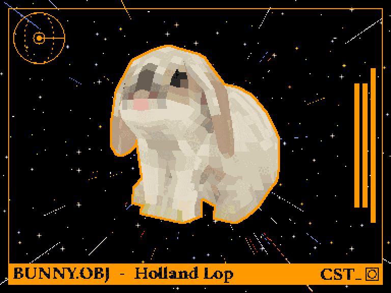
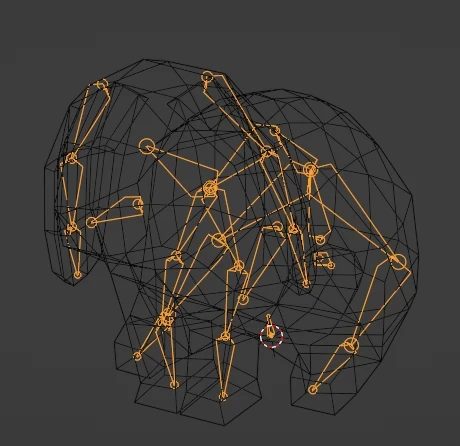
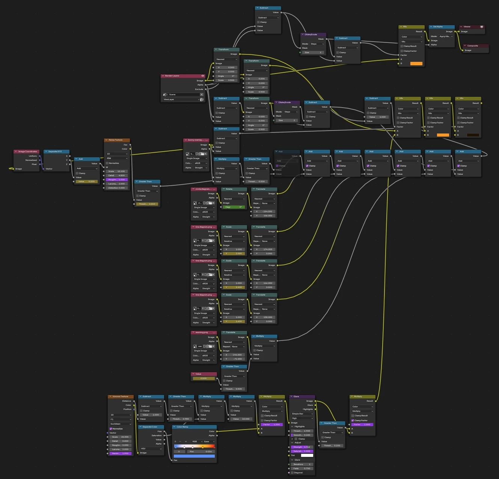
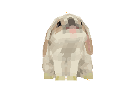

a stylised game ready rabbit asset, made in Blender. rigged to be manipulable, but not quite suitable for a walking animation. shown with stylised visual elements and background. an interstellar visitor. low-poly modelling and texel-art texturing, resulting in a model with 488 tris and a 64x64 texture. nose can be wiggled. 2D overlay for animation created in Inkscape, and combined during stylised compositing.

488 triangles - 64x64 texture - 26 armature bones

compositing node tree